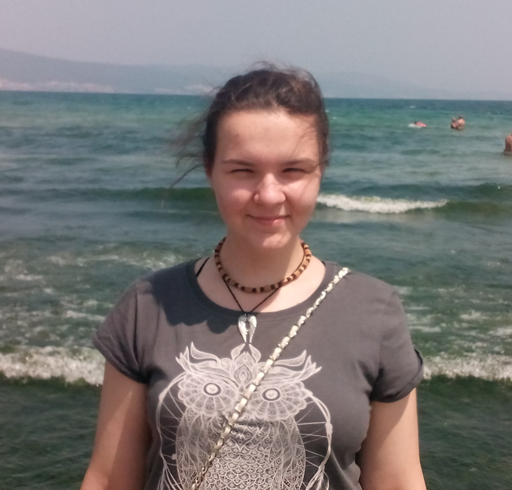
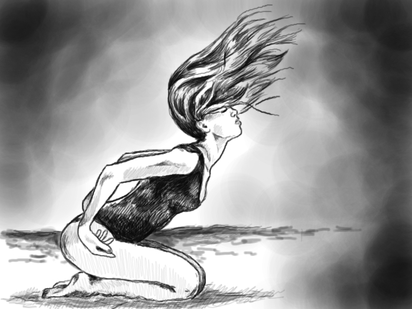
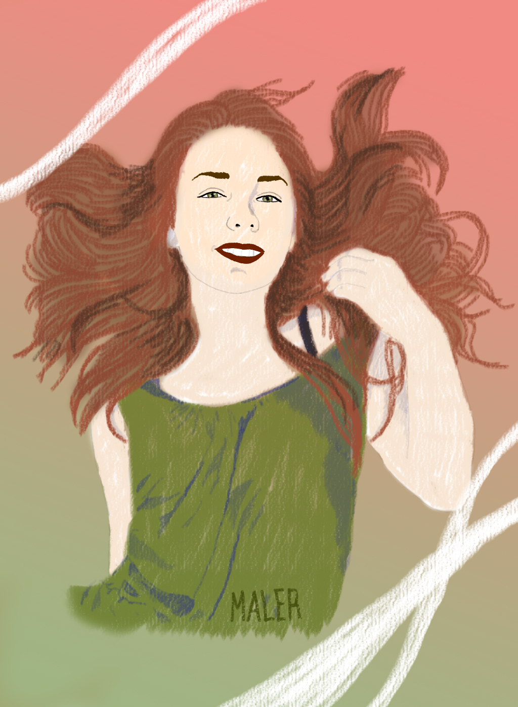
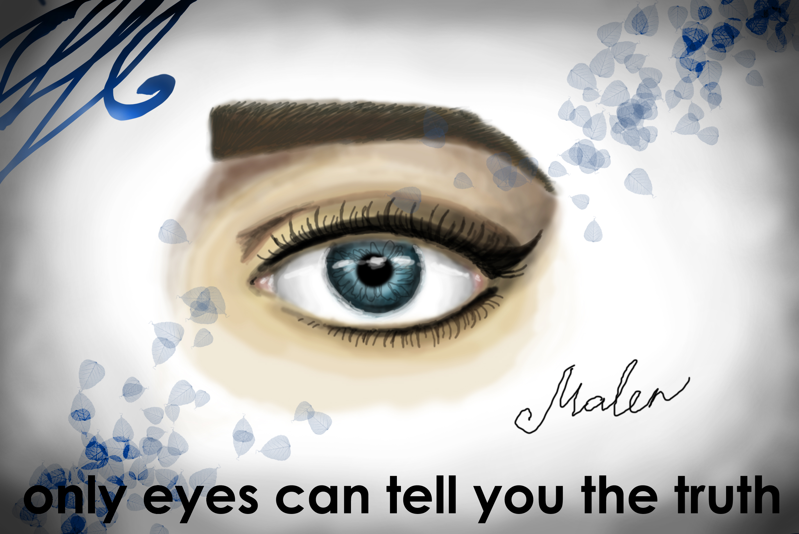
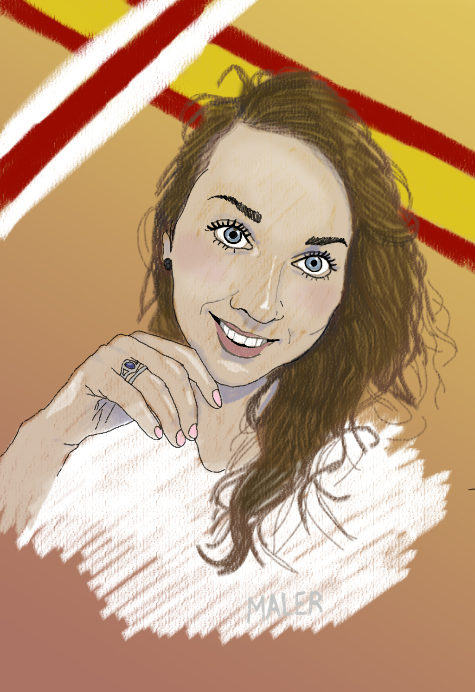
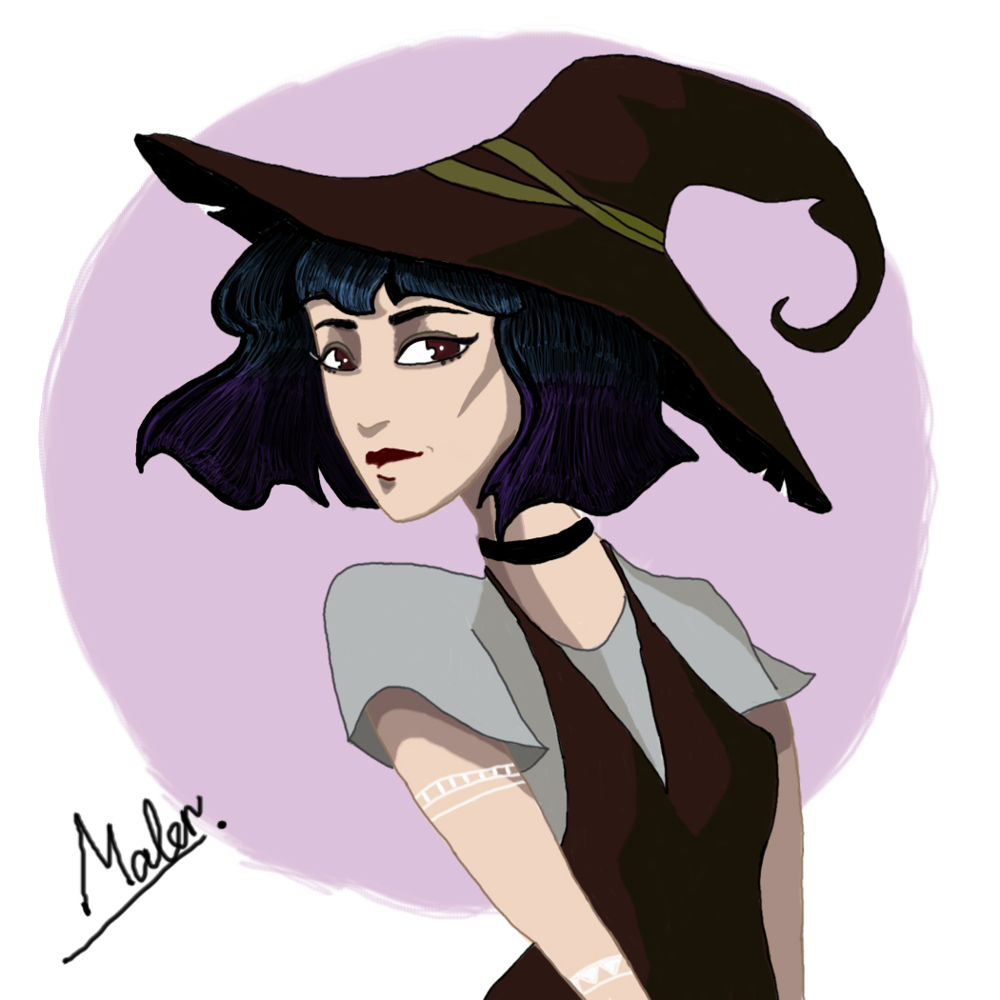
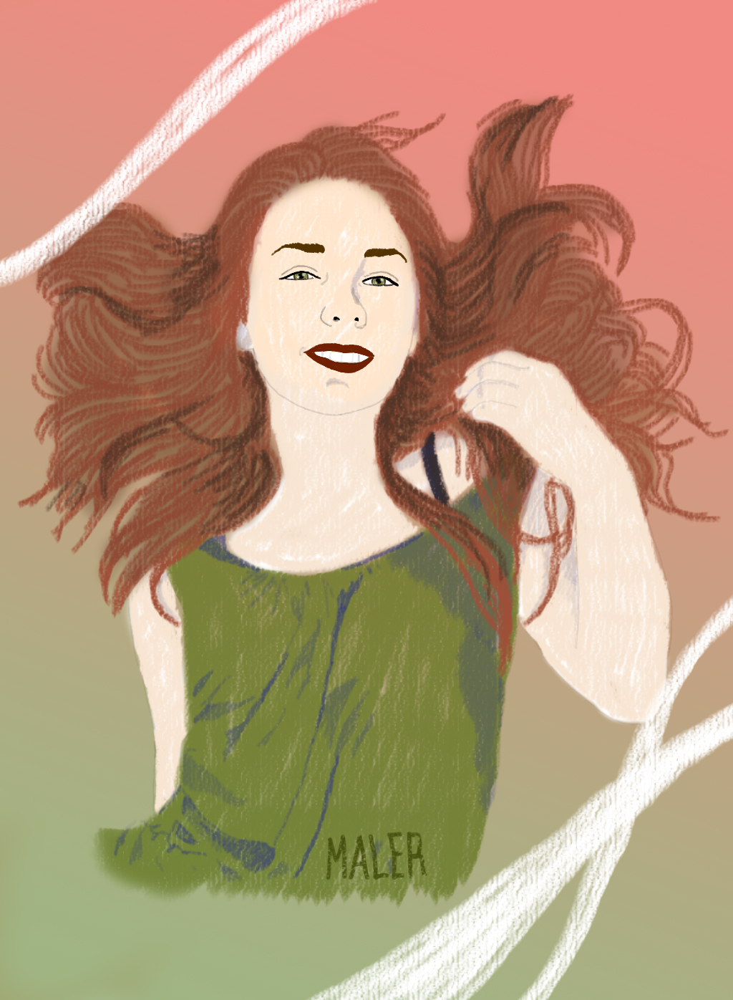
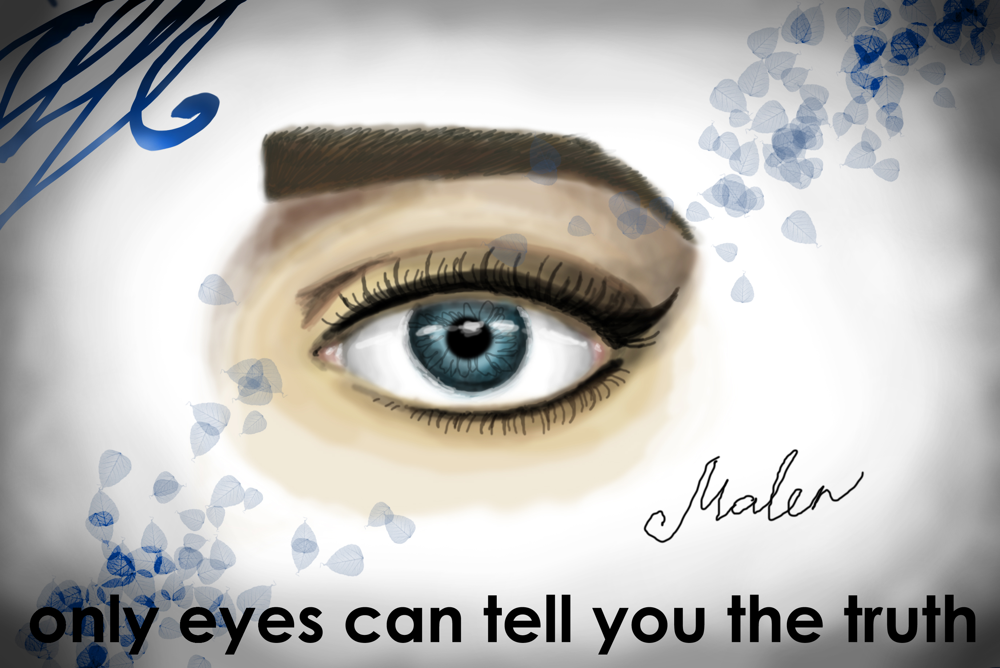
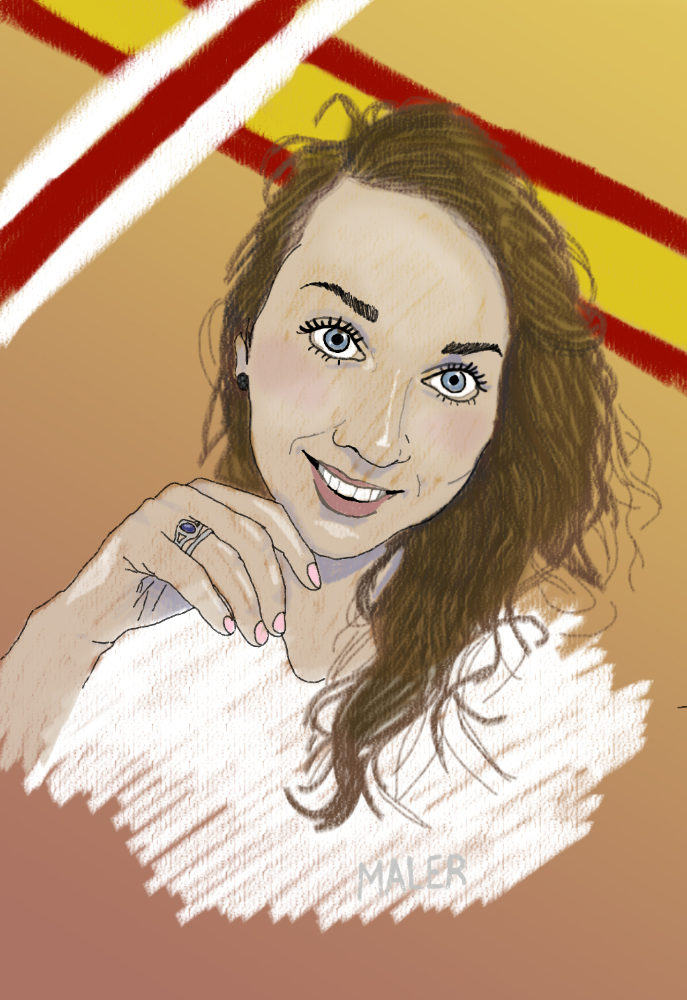
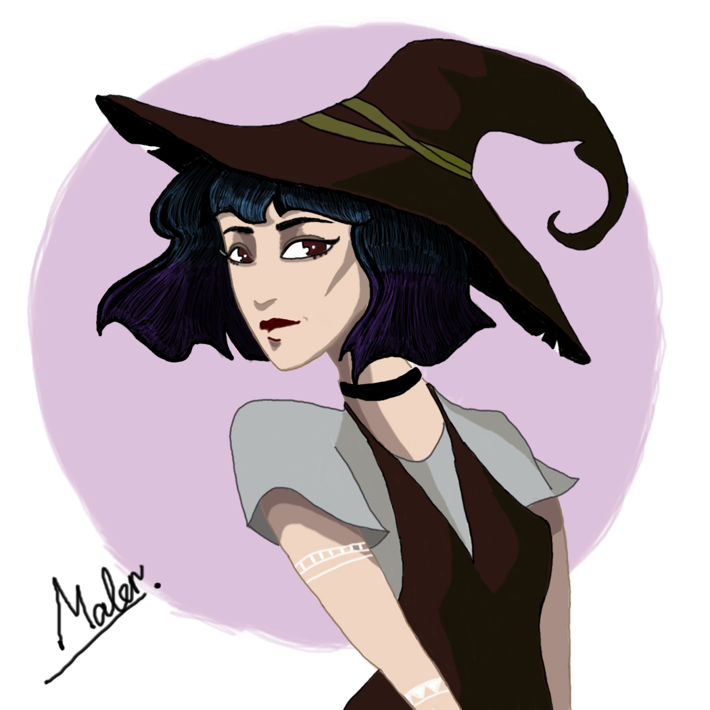

КТО Я ТАКАЯ?
Я - творческий человек. Я питаюсь космосом, его необъятной энергией. Я чувствую момент сейчас, Я живу в этом моменте. Нет, сейчас Я не здесь, сейчас Я рисую, Я творю. Мое воображение в моменте, но не в нем. Я впитываю энергию всего сущего. Я впитываю наше бытие и достаю из небытия сюрреалистичные, самые необычные сюжеты, которые только могут быть отражены на бумаге или холсте.
Слышишь, как говорят звезды? Слышишь, что шепчут волны? Послушай, тебе понравится. Я умею слушать, Я люблю слушать. Я чувствую природу, чувствую её вибрации. Попробуй почувствовать - тебе понравится. Я люблю необычные вещи и даже в самых обычных вещах вижу необычное. Хочешь, Я нарисую луну, какой Ты ее не видел? Море, с которым Ты никогда не говорил? Я говорила, даже более того. Море, блики солнца, красивый закат, шум прибоя, крики чаек, теплый песок, соленый воздух - это все Я, мое истинное Я.
КАК Я РИСУЮ?
Ты уверен, что Ты готов?
Только этот момент. Без ограничений. Все, что существует в этот момент. Во всех измерениях. Нет разницы бумага это или холст. Электронное перо открывает больше возможностей. Материальное и цифровое. Вместе.
Я имею все возможности для творчества, поэтому Ты имеешь весь космос для запросов. Энергия везде, энергия пронизает всё. Всё, что Ты придумаешь, всё, что Ты попросишь - уже существует в энергии. Осталось только перенести это. Я умею это. Спрашивай.
МОИ ПРОШЛЫЕ РАБОТЫ
 







КАК СО МНОЙ СВЯЗАТЬСЯ
Со мной могут связаться только те, кто точно знает, чего он хочет. Те, у кого есть замысел, который стоит моих усилий, стоит усилий самой Вселенной, которая содержит необходимую энергию.
Все контакты находятся внутри. Попробуй - и возможно мы увидимся с тобой и вместе познаем силу твоего разума. Попробуй - и мы сможем найти выход для созидания именно твоего замысла. Попробуй - и, возможно, ты найдешь ЕЁ.
Просто попробуй.